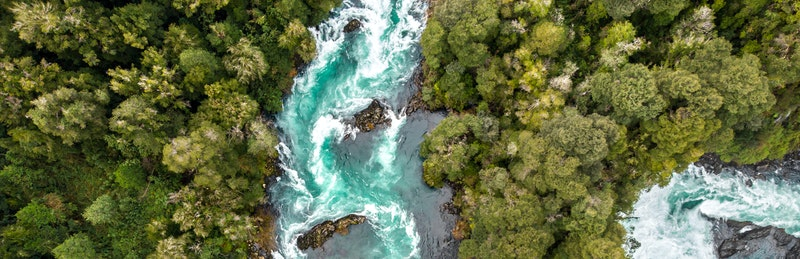

Meio Ambiente
e
Saúde
Na Constituição Federal de 1988, assim como consta o direito universal e igualitário do cidadão à saúde, se estabelece o direito a um meio ambiente equilibrado, com condições de saneamento básico, moradia e água potável condizentes com uma vida digna e com a saúde socioambiental.
Podemos dizer que a relação saúde e meio ambiente é indissociável, ou seja, as questões ambientais são parte integrante da saúde. Para compreendermos esta relação homem-meio é importante dizer que eles estão em constante interação.
